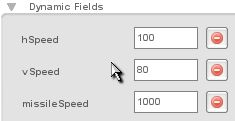
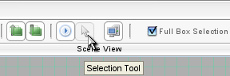
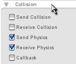
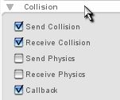
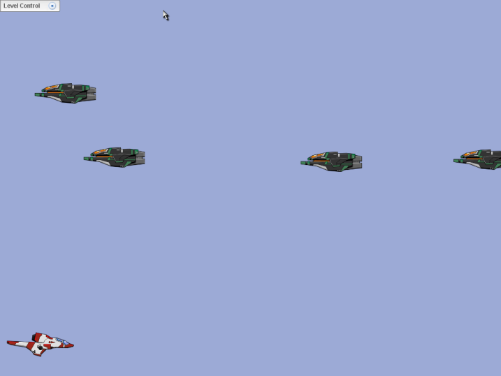

Torque 2D – Shooter Tutorial – Part 5
5. Adding Combat
First we will need to get the player shooting at the enemy. To do this requires quite a bit of scripting – so first we need to give our player another dynamic field. Go into the playerShip's dynamic field rollout and add a variable missileSpeed – I set my value to 1000 (as shown in Figure 5.1.1).

Figure
5.1.1
This field will define how fast our missile goes when we fire it. Now that you have your field set up, it is time to start scripting! Save your progress and close out T2D.
Once you have T2D closed out, browse out to yourProjectName/gameScripts folder and open up your player.cs file. When you have your player.cs file open, add this to your onLevelLoaded function with all of your other keybind functions:
moveMap.bindCmd(keyboard, "space", "$pShip.createMissile();", "");
Code Sample 5.1.1
This simply binds your space key to the global function createMissile. As you can see, we had to specify which object would be using the createMissile function – our player's ship.
Now that we have the space bar calling the createMissile function, let's create that function. Place this code at the bottom of your player.cs file:
function playerShip::createMissile(%this)
{
%this.playerMissile = new t2dStaticSprite()
{
scenegraph = %this.scenegraph;
class = playerMissile;
missileSpeed=%this.missileSpeed;
player = %this;
};
%this.playerMissile.fire();
}
Code Sample 5.1.2
This line of code creates our missile, and sets class and speed. Also, it creates fields that store the scenegraph and player. These will be used later on when our missile fires. After it creates the missile, it calls the fire function for the playerMissile class that we haven't created yet. This code is all that we need to add to the player.cs file, however, now we need to create a new file for the player's missile.
In your yourProjectName/gameScripts folder, create a new .cs file named “playerMissile”. This file will hold everything that we need for our player's missile to work properly. The first function we will need in our playerMissile.cs file is our fire function:
function playerMissile::fire(%this)
{
%this.setWorldLimit( kill, "-85 -115 155 50" );
%this.setLinearVelocityX(%this.missileSpeed);
%this.setPosition(%this.player.getPosition());
%this.setImageMap(playerMissileImageMap);
%this.setSize(12, 2);
%this.setCollisionActive( true, true );
%this.setCollisionPhysics(false, false);
%this.setCollisionCallback(true);
}
Code Sample 5.1.3
|
**NOTE** The first line of this function: %this.setWorldLimit( kill, "-85 -115 155 50" ); assumes that your camera view is exactly the same size as mine. Since this is highly unlikely, you will probably have to alter the numbers to match your camera view. The parameters for this function are as follows setWorldLimit(%mode, %minX, %minY, %maxX, %maxY). Look under the World Limits tab of your Player ship for a good idea of what values to use. |
This function handles most of the settings of our missile. It sets the world limit for us. I used numbers slightly larger than the player's world limit because I only wanted the missiles to be in code as long as they were on the screen. The next line sets the missile's speed to a variable missileSpeed. This variable is the one we created on our player before we began coding. The next line sets the missile's position to be equal to the player's position. We did it like that so that no matter where the player is on screen, the missile will fire from the player's location. The next line sets the image of the missile, which is the name of the graphic we imported for the player's missile. We then set the size of the missile. The “22” represents the width of the missile and the “2” represents the height of the missile. In my case this size worked well, your camera size might not exactly match mine, so remember this location to go back to if you want to tweak the missile's size. The last three lines turn the collision on, turn the physics off, and turn on collision callbacks.
The next function we need deals with what is going to happen to our missile when it collides with something:
function playerMissile::onCollision( %srcObj, %dstObj, %srcRef, %dstRef, %time,
%normal, %contactCount, %contacts )
{
if(%dstObj.class $= "enemyShip")
{
%srcObj.explode();
%dstObj.explode();
}
}
Code Sample 5.1.4
This function is pretty simple – it is only triggered when the missile collides with something. When it collides, it checks the class of what it collided with. If it collided with an object with the class of “enemyShip”, it calls its own explode function and the enemyShip's explode function.
The final function we will need for the playerMissile is the explode function that is triggered when it collides with an enemy ship:
function playerMissile::explode(%this)
{
%this.safeDelete();
}
Code Sample 5.1.5
All this function does is delete the missile when it is called. Now that we have our playerMissile set up, we need to add the explode function to our enemy.
Open up your enemy.cs file. After you open it, add this function to the bottom of the file:
function enemyShip::explode(%this)
{
%this.spawn();
}
Code Sample 5.1.6
All it does is call the enemy's spawn function when it is triggered. Save your files (if you haven't already) and go into your game.cs file and make your exec statements look like this:
exec("./player.cs");
exec("./enemy.cs");
exec("./playerMissile.cs");
Code Sample 5.1.7
That is all the code you need to get your enemy ready to die – the rest of the work is done in the Level Builder.
Open your level builder back up and select your enemy. Use the Collision Poly Tool to define a custom collision polygon for the enemy ship. I suggest that your first four points make a diamond shape around the ship (as shown in Figure 5.2.2).
Once you have your diamond, outline, if you click around your ship, a new point will appear and be connected to the rest of the shape. NOTE: You cannot create concave collision polygons, if you find that your point is not moving where you want it to go, chances are you are trying to make a concave shape. Once you have the collision polygon created (as shown in Figure 5.2.3), it is time to set the enemy's collision properties. If you haven't already exited out of edit collision polygon mode, click the selection tool (as shown in Figure 5.2.4):
Figure
5.2.3

Figure
5.2.4
Now, with the enemy ship still selected, go into the edit tab and find the Collision rollout.
When you get into your rollout, uncheck Send and Receive Physics and check Send Collision, Receive Collision, and Callback (as shown in Figure 5.2.5)

Figure
5.2.5a

Figure
5.2.5b
That should be enough to get your collision working in your game. Now would be a good time to save your progress, jump into your game, and blast some enemy ships (as shown in Figure 5.2.6)!

Figure
5.2.6
NOTE: If you created more than one enemy ship, they will all have to be modified in the same way to work. You can either modify each one individually, or delete all but your modified ship and COPY/PASTE more ships into the level.